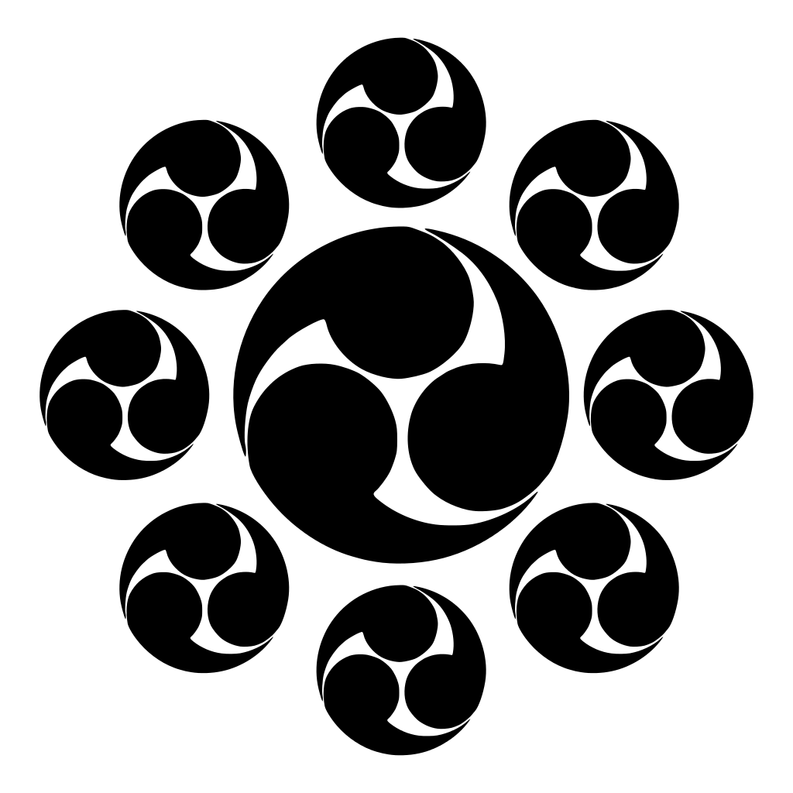
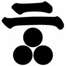
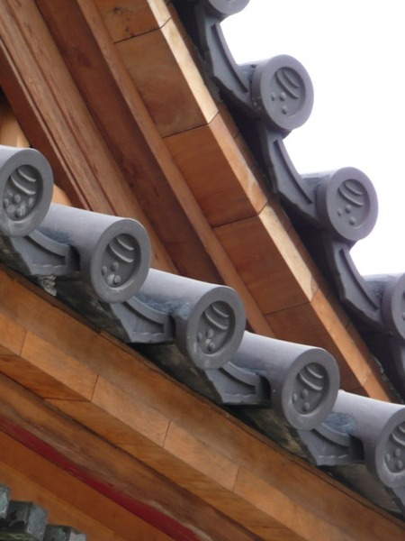
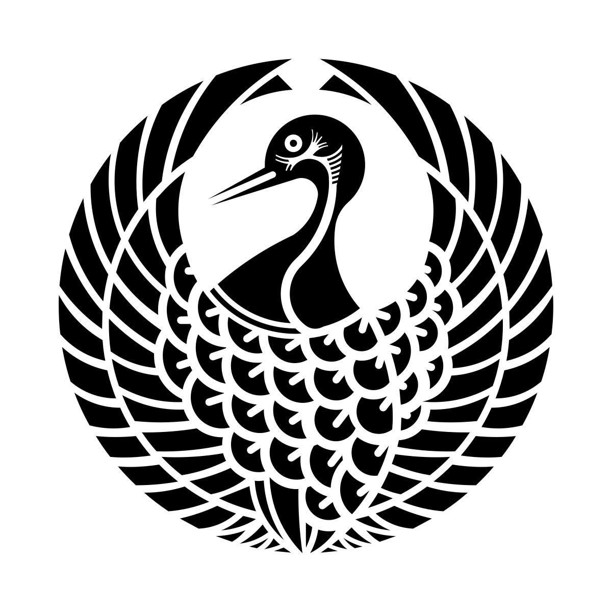

介紹
家紋的文化約在室町時代普及至武家之間。到了戰國時代，因為有在戰場上辨識敵我的需要，家紋的重要性更加凸顯，大量地使用在軍旗、甲冑上。前面已提到過信長、秀吉、家康這「戰國三英傑」了，下面就略舉其他武將、大名的家紋為例。
 九曜紋
九曜紋是星宿信仰的象徵，九個圓型代表日月金木水火土，加上「計都」和「羅睺」兩個古人想像中的星宿。使用此一家紋的武將希望從神秘的星宿獲得力量，祈求武運。「獨眼龍」伊達政宗的軍師－片倉景綱所屬的片倉氏，以及熊本藩主細川氏，都是以九曜紋為家紋。
丸十字
最早的島津家紋僅為一個漢字書寫體的十字，後來才加上外圍的圓圈並且符號化。十字的意義也有種種推測，有說是雙龍的抽象化、馬轡的形狀，或者是出陣前把筷子交叉祈求戰勝的儀式。現在的鹿兒島市章設計也沿用丸十字。
除了武家的島津氏，以製造精密機械聞名的老牌企業「島津製作所」也是以丸十字為商標。不過島津製作所與武家島津氏並沒有血緣關係，創業者島津源藏是土生土長的京都人。但因為其先祖曾為戰國時代的薩摩大名島津義弘服務，獲得賜姓島津及家紋，於是在明治時代創業時，就大方的拿丸十字當商標了。
 一文字三星
一文字三星
幕末時薩摩的歡喜冤家長州藩，其藩主毛利氏的家紋結合了漢字「一」與「三個圓形」，十分特殊，稱為「一文字三星」。 毛利氏遠祖為平安初年的皇族阿保親王，死後被追封一品，而一文字三星就是漢字「一品」的幾何化，並且以三個圓作為「將軍星」（即獵戶座三星）的象徵。而毛利的支系或家臣，也會以此紋為基礎做變化設計。
 二文字三星
台北圓山的護國禪寺於日治時代由總督兒玉源太郎所建立。兒玉總督出身於長州，其家紋之一就是「二文字三星」，在禪寺的屋瓦上即可看到。
 台北圓山的護國禪寺
柏紋
日文漢字的「柏」指的是槲樹，而非針葉樹的柏。柏葉寬大且帶有芳香，不僅日常中會拿來包裹菓子、飯團，也會用來盛放祭神的供品，除了武家以外，許多神職家系也會使用柏紋作為家紋。
統治土佐（今高知縣）的山內氏，家紋便是柏紋。傳說土佐初代藩主山內一豐之父盛豐，在一次戰役中丟失了馬印（標示將領位置的大旗或立體號誌），於是盛豐砍了一截路邊的柏木樹枝來代替馬印。等到打完勝仗以後，樹枝上面的葉子已經打到剩下三片。於是這三片柏葉就成了山內氏的家紋。
桔梗紋
許多戲劇演到「本能寺之變」都會來上這麼一段：部下跑來向織田信長報告敵軍來襲的消息，信長問「敵人是誰？」，部下答「旗印是水色桔梗！」；信長略為一驚，接著就嘆道「那就沒什麼好講了。」也因為本能寺之變，讓明智光秀和桔梗家紋廣為世人熟知。
明智氏為源氏嫡系的土岐氏庶流。據說土岐氏家祖曾經在戰役中把桔梗花插在頭盔上，並且獲得了大勝。而且「桔梗」裡帶有「更」「吉」兩字，寓意十分吉利，因此成為土岐氏家紋，明智氏也繼承使用。
 鶴丸紋
鶴是古人眼中長壽的的仙鳥，因其吉利的象徵而成為十分受歡迎的家紋圖案。包括森可成、森長可、森蘭丸等，父子皆為為織田信長旗下猛將的森氏，便是以鶴丸為家紋；本願寺派在早期亦曾使用鶴丸紋。到了現代，日本航空JAL也是以紅色的鶴丸為Logo。